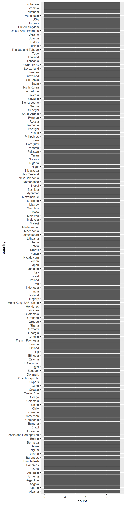
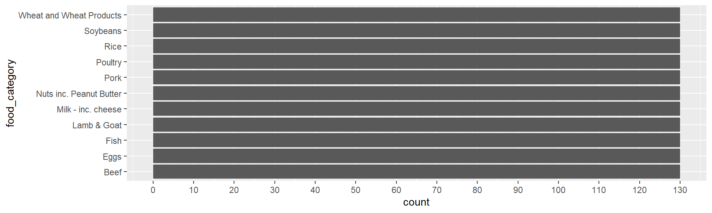
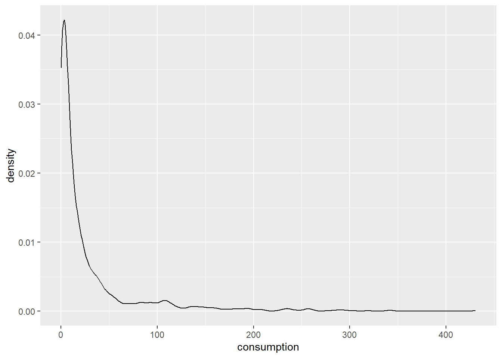
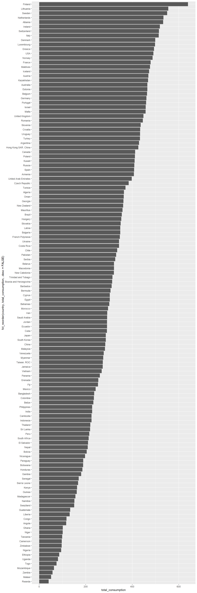

This document is used to create a visualization working with the Food Consumption and CO2 Emissions dataset used in Week 8 of the year 2020 in the TidyTuesday project. The data includes four variables: country: A character variable with the country name of the observation. food_category: A character variable that tells what type of food category the observation is measuring consumption: A double variable that tells the consumption of the observation in kg/person/year co2_emmission: A double variable which tells the CO2 emission in kg/person/year of each observation.
The main question to answer throughout this exam and data exploration is “What does the consumption of each food category in each country look like?
library(tidytuesdayR, quietly =TRUE)
Warning: package 'tidytuesdayR' was built under R version 4.4.3
library(tidyverse, quietly =TRUE)
── Attaching core tidyverse packages ──────────────────────── tidyverse 2.0.0 ──
✔ dplyr 1.1.4 ✔ readr 2.1.5
✔ forcats 1.0.0 ✔ stringr 1.5.1
✔ ggplot2 3.5.1 ✔ tibble 3.2.1
✔ lubridate 1.9.3 ✔ tidyr 1.3.1
✔ purrr 1.0.2
── Conflicts ────────────────────────────────────────── tidyverse_conflicts() ──
✖ dplyr::filter() masks stats::filter()
✖ dplyr::lag() masks stats::lag()
ℹ Use the conflicted package (<http://conflicted.r-lib.org/>) to force all conflicts to become errors
Now we will create a dataset in our R workspace called tuesdata from the tidy tuesday dataset on the desired date. Then we load the file of interest into the fc dataset in our workspace.
tuesdata <-tt_load('2020-02-18')
---- Compiling #TidyTuesday Information for 2020-02-18 ----
--- There is 1 file available ---
── Downloading files ───────────────────────────────────────────────────────────
1 of 1: "food_consumption.csv"
fc <- tuesdata$food_consumptionhead(fc)
# A tibble: 6 × 4
country food_category consumption co2_emmission
<chr> <chr> <dbl> <dbl>
1 Argentina Pork 10.5 37.2
2 Argentina Poultry 38.7 41.5
3 Argentina Beef 55.5 1712
4 Argentina Lamb & Goat 1.56 54.6
5 Argentina Fish 4.36 6.96
6 Argentina Eggs 11.4 10.5
Looking at the top and bottom 22 rows of data, we can determine the units of observation to be combinations of each of 11 food categories and each of 130 countries (determined using the dim() command in the chunk above).
head(fc, 22)
# A tibble: 22 × 4
country food_category consumption co2_emmission
<chr> <chr> <dbl> <dbl>
1 Argentina Pork 10.5 37.2
2 Argentina Poultry 38.7 41.5
3 Argentina Beef 55.5 1712
4 Argentina Lamb & Goat 1.56 54.6
5 Argentina Fish 4.36 6.96
6 Argentina Eggs 11.4 10.5
7 Argentina Milk - inc. cheese 195. 278.
8 Argentina Wheat and Wheat Products 103. 19.7
9 Argentina Rice 8.77 11.2
10 Argentina Soybeans 0 0
# ℹ 12 more rows
Now we can begin to explore some of our variables of interest with visualizations. What are our variables of interest? Because we want to know the distribution of food category consumption between countries, we are interested in country, food_category, and consumption. First, let’s see how many observations there are per country. We can do this by creating a bar chart, which will show how many rows in the dataset each country name corresponds to. The bar chart below shows that each country has 11 observed rows (or occurrences) in the dataset, corresponding to the 11 food categories possible.
ggplot(fc, aes(y = country)) +geom_bar()

Next, we can explore the food category variable, and see how many countries have listings for. Below we see that each food category has 130 observations, corresponding to the 130 countries in the dataset.
ggplot(fc, aes(y = food_category)) +geom_bar() +scale_x_continuous(breaks =seq(0, 150, by =10))

Finally for our exploration of unique variable of interest, we will create a density plot of the total per person consumption distributions across every food category in every country. We see that most of the observations of food categories and per person consumption in each country are just above 0, very low compared to some of the outliers, as we see small peaks just above 100 and even at 250 kg/person/year. Thinking critically, we might expect that most of the consumption categories, like soybeans, pork, and eggs, have very low numbers in most countries, whereas some of the broader categories like wheat and wheat products generally have much higher consumption rates across most countries.
ggplot(fc, aes(x = consumption)) +geom_density()

Now we can move on to investigating two variables at once and how they relate to each other. We will start by comparing overall food consumption per person to the food category. The below, the faceted boxplots show us that the median of each the milk inc. cheese food category is much higher than the others, and that only wheat and wheat products comes in at a close second, with far fewer high outliers. The categories with visually the lowest median consumption rates are lamb & goat, soybeans, and nuts inc. peanut butter. Looking at both the boxplots and the numerical summaries, both eggs and soybeans have relatively consistent rates of consumption across countries.
A second bivariate visualization will explore the relationship between overall food consumption per person and the country variable. This chart shows the total kg/person/year consumed of all food categories combined. I have created a bar chart that arranges the countries on the y axis by the total consumption per year per person. We can see that Finland has the highest consumption total, followed by Lithuania and Sweden. The countries with the lowest total consumption per person per year are Zambia, Malawi, and Rwanda, with people only reporting to eat about 5-7 kg of food per year, at least of the categories of food listed here.
fc |>group_by(country) |>summarize(total_consumption =sum(consumption)) |>arrange(desc(total_consumption)) |>ggplot( aes(y =fct_reorder(country, total_consumption, .desc =FALSE), x = total_consumption)) +geom_bar(stat ="identity")

it is time to answer the main question of this data visualization process! We will use a heat map to visualize countries on the y axis, food catgories on the x axis, and a colored box to show the numerical variable in each box.
# Construct heatmaplibrary (gplots)
Attaching package: 'gplots'
The following object is masked from 'package:stats':
lowess
#| fig-height: 30#| fig-width: 10fc_wide <- fc |>mutate(food_category =gsub(" ", "_", food_category)) |>mutate(food_category =gsub("&", "and", food_category)) |>pivot_wider(names_from ="food_category", values_from ="consumption")fc_wide <- fc_wide |>group_by(country) |>summarize(Poultry =median(Poultry, na.rm =TRUE),Pork =median(Pork, na.rm =TRUE),Beef =median(Beef, na.rm =TRUE),Lamb_and_Goat =median(Lamb_and_Goat, na.rm =TRUE),Fish =median(Fish, na.rm =TRUE),Eggs =median(Eggs, na.rm =TRUE),`Milk_-_inc._cheese`=median(`Milk_-_inc._cheese`, na.rm =TRUE),Wheat_and_Wheat_Products =median(Wheat_and_Wheat_Products, na.rm =TRUE),Rice =median(Rice, na.rm =TRUE),Soybeans =median(Soybeans, na.rm =TRUE),`Nuts_-_inc._pb`=median(`Nuts_inc._Peanut_Butter`, na.rm =TRUE))plot_data <- fc_wide |>column_to_rownames("country") |>data.matrix()head(plot_data) # This shows us that we have successfully restructured the data so that it is ready to be put in a heatmap
Below is that actual code answer the main question addressed in this exploration of data. How does food consumption vary across countries and food categories? This heatmap easily allows us to see some outliers in the trends, which are noticeable by the bright yellow squares on the heatmap. For example, the United Arab Emirates has a relatively high per person annual consumption of nuts and peanut butter, as do Hong Kong and the Maldives, among others. The brightest sections (highest consumption value) on the map is for fish consumption in the Maldives. I’ve added another section of code that lets us see that the actual number per person per year of fish consumed in the Maldives is 179.71 kg. Another very bright spot on the chart, which is an outlier, is the intersection of the soybeans category and Taiwan, showing that those in Taiwan eat a relatively large number of soybeans on average. Another interesting trend that we can see is that most of the European countries eat less rice than the asian countries. This separation occurs as a result of the clustering that the heatmap function allows us to do. Asian countries such as Vietnam, Bangladesh, and Cambodia eat more rice on average per person than countries like Luxembourg, France, and Norway.
# A tibble: 1 × 2
Fish country
<dbl> <chr>
1 180. Maldives
Source Code
---title: "Exam 1 Visualization Process"format: html---This document is used to create a visualization working with the Food Consumption and CO2 Emissions dataset used in Week 8 of the year 2020 in the TidyTuesday project. The data includes four variables:`country`: A character variable with the country name of the observation.`food_category`: A character variable that tells what type of food category the observation is measuring`consumption`: A double variable that tells the consumption of the observation in kg/person/year`co2_emmission`: A double variable which tells the CO2 emission in kg/person/year of each observation.The main question to answer throughout this exam and data exploration is "What does the consumption of each food category in each country look like?```{r LoadPackages}library(tidytuesdayR, quietly = TRUE)library(tidyverse, quietly = TRUE)```Now we will create a dataset in our R workspace called `tuesdata` from the tidy tuesday dataset on the desired date. Then we load the file of interest into the fc dataset in our workspace.```{r LoadData}tuesdata <- tt_load('2020-02-18')fc <- tuesdata$food_consumptionhead(fc)dim(fc)names(fc)```Looking at the top and bottom 22 rows of data, we can determine the units of observation to be combinations of each of 11 food categories and each of 130 countries (determined using the `dim()` command in the chunk above).```{r HeadAndTail}head(fc, 22)tail(fc, 22)```Now we can begin to explore some of our variables of interest with visualizations. What are our variables of interest? Because we want to know the distribution of food category consumption between countries, we are interested in `country`, `food_category`, and `consumption`. First, let's see how many observations there are per country. We can do this by creating a bar chart, which will show how many rows in the dataset each country name corresponds to. The bar chart below shows that each country has 11 observed rows (or occurrences) in the dataset, corresponding to the 11 food categories possible.```{r CountryBarchart}#| fig-height: 20#| fig-width: 5ggplot(fc, aes(y = country)) + geom_bar()```Next, we can explore the food category variable, and see how many countries have listings for. Below we see that each food category has 130 observations, corresponding to the 130 countries in the dataset.```{r CategoryBarChart}#| fig-height: 3#| fig-width: 10ggplot(fc, aes(y = food_category)) + geom_bar() + scale_x_continuous(breaks = seq(0, 150, by = 10))```Finally for our exploration of unique variable of interest, we will create a density plot of the total per person consumption distributions across every food category in every country. We see that most of the observations of food categories and per person consumption in each country are just above 0, very low compared to some of the outliers, as we see small peaks just above 100 and even at 250 kg/person/year. Thinking critically, we might expect that most of the consumption categories, like soybeans, pork, and eggs, have very low numbers in most countries, whereas some of the broader categories like wheat and wheat products generally have much higher consumption rates across most countries.```{r ConsumptionDensity}ggplot(fc, aes(x = consumption)) + geom_density()```Now we can move on to investigating two variables at once and how they relate to each other. We will start by comparing overall food consumption per person to the food category. The below, the faceted boxplots show us that the median of each the milk inc. cheese food category is much higher than the others, and that only wheat and wheat products comes in at a close second, with far fewer high outliers. The categories with visually the lowest median consumption rates are lamb & goat, soybeans, and nuts inc. peanut butter. Looking at both the boxplots and the numerical summaries, both eggs and soybeans have relatively consistent rates of consumption across countries.```{r FoodConsumptionPerCategory}#| fig-height: 8#| fig-width: 7ggplot(fc, aes(y = consumption)) + geom_boxplot() + facet_wrap(~food_category)fc |> group_by(food_category) |> summarize(mean(consumption), max(consumption), min(consumption))```A second bivariate visualization will explore the relationship between overall food consumption per person and the country variable. This chart shows the total kg/person/year consumed of all food categories combined. I have created a bar chart that arranges the countries on the y axis by the total consumption per year per person. We can see that Finland has the highest consumption total, followed by Lithuania and Sweden. The countries with the lowest total consumption per person per year are Zambia, Malawi, and Rwanda, with people only reporting to eat about 5-7 kg of food per year, at least of the categories of food listed here.```{r FoodConsumptionPerCountry}#| fig-height: 30#| fig-width: 10fc |> group_by(country) |> summarize(total_consumption = sum(consumption)) |> arrange(desc(total_consumption)) |> ggplot( aes(y = fct_reorder(country, total_consumption, .desc = FALSE), x = total_consumption)) + geom_bar(stat = "identity")```it is time to answer the main question of this data visualization process! We will use a heat map to visualize countries on the y axis, food catgories on the x axis, and a colored box to show the numerical variable in each box.```{r HeatMapWrangling}# Construct heatmaplibrary (gplots)#| fig-height: 30#| fig-width: 10fc_wide <- fc |> mutate(food_category = gsub(" ", "_", food_category)) |> mutate(food_category = gsub("&", "and", food_category)) |> pivot_wider(names_from = "food_category", values_from = "consumption")fc_wide <- fc_wide |> group_by(country) |> summarize(Poultry = median(Poultry, na.rm = TRUE), Pork = median(Pork, na.rm = TRUE), Beef = median(Beef, na.rm = TRUE), Lamb_and_Goat = median(Lamb_and_Goat, na.rm = TRUE), Fish = median(Fish, na.rm = TRUE), Eggs = median(Eggs, na.rm = TRUE), `Milk_-_inc._cheese` = median(`Milk_-_inc._cheese`, na.rm = TRUE), Wheat_and_Wheat_Products = median(Wheat_and_Wheat_Products, na.rm = TRUE), Rice = median(Rice, na.rm = TRUE), Soybeans = median(Soybeans, na.rm = TRUE), `Nuts_-_inc._pb` = median(`Nuts_inc._Peanut_Butter`, na.rm = TRUE))plot_data <- fc_wide |> column_to_rownames("country") |> data.matrix()head(plot_data) # This shows us that we have successfully restructured the data so that it is ready to be put in a heatmap```Below is that actual code answer the main question addressed in this exploration of data. How does food consumption vary across countries and food categories? This heatmap easily allows us to see some outliers in the trends, which are noticeable by the bright yellow squares on the heatmap. For example, the United Arab Emirates has a relatively high per person annual consumption of nuts and peanut butter, as do Hong Kong and the Maldives, among others. The brightest sections (highest consumption value) on the map is for fish consumption in the Maldives. I've added another section of code that lets us see that the actual number per person per year of fish consumed in the Maldives is 179.71 kg. Another very bright spot on the chart, which is an outlier, is the intersection of the soybeans category and Taiwan, showing that those in Taiwan eat a relatively large number of soybeans on average. Another interesting trend that we can see is that most of the European countries eat less rice than the asian countries. This separation occurs as a result of the clustering that the heatmap function allows us to do. Asian countries such as Vietnam, Bangladesh, and Cambodia eat more rice on average per person than countries like Luxembourg, France, and Norway.```{r HeatMapMaking}#| fig-height: 31#| fig-width: 7heatmap.2(plot_data, dendrogram = "none", Rowv = TRUE, scale = "column", keysize = 0.7, density.info = "none", col = hcl.colors(256), margins = c(10, 10), cexRow = 1, cexCol = 1, sepcolor = "white", trace = "none", par(mar = c(4, 1, 1, 1)))fc_wide |> filter(country == "Maldives") |> select(Fish, country)```